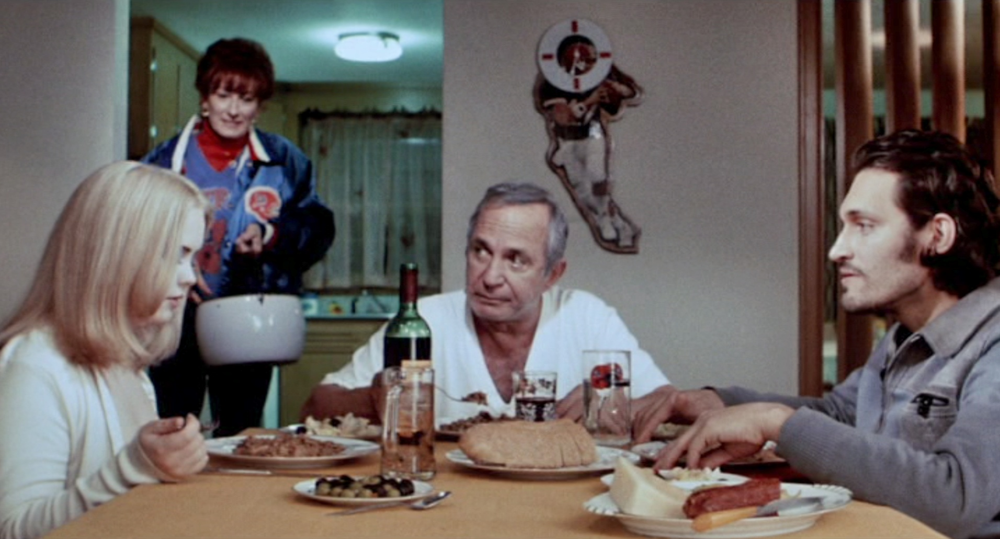
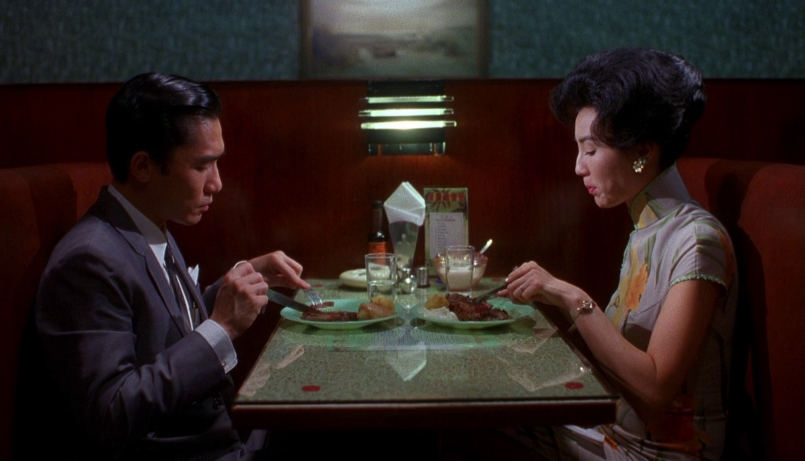
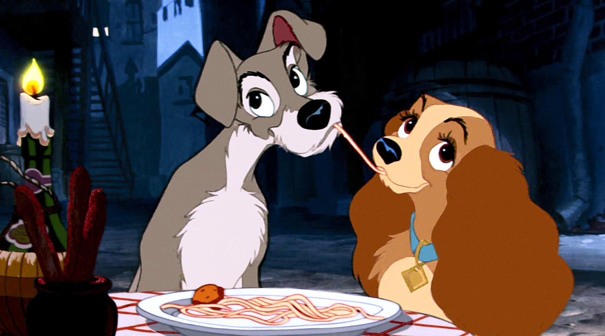
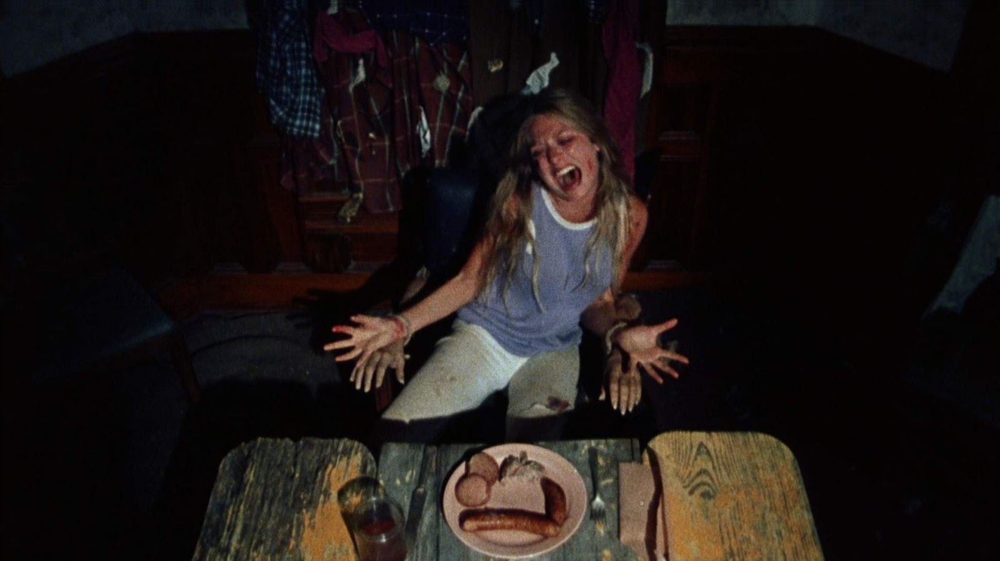
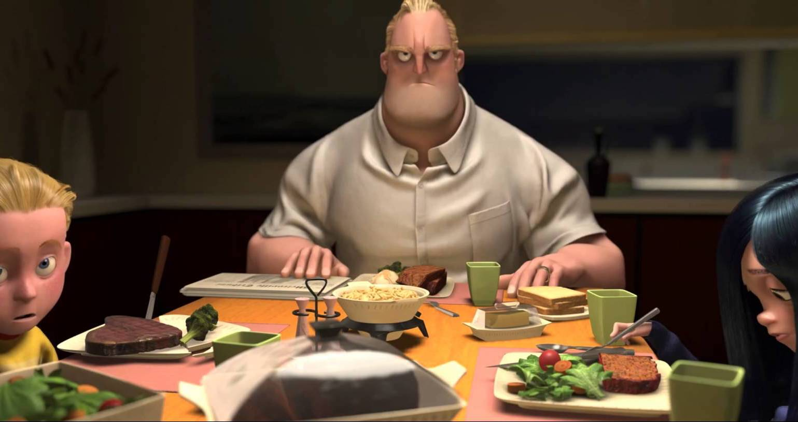
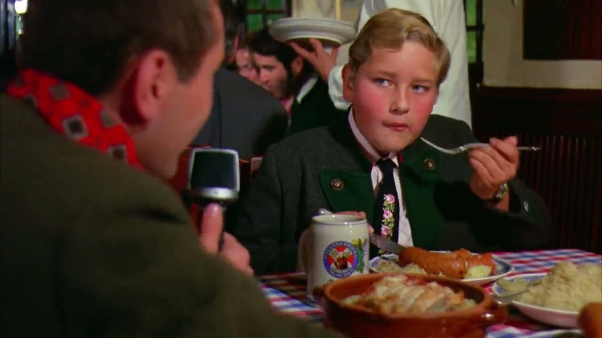

dinner

Amelie (2001): a plate of spaghetti.

Buffalo '66' (1998): sausage, cheese, and wine.

A Clockwork Orange (1971): a plate of spaghetti.

In the Mood for Love (2000): steak and potatoes.

Lady and the Tramp (1955): a plate of spaghetti and meatballs.

Love (2015): curry and rice.

Tampopo (1985): ramen.

The Texas Chain Saw Massacre (1974): sausage.

Pulp Fiction (1994): burger, fries and a vanilla milkshake.

The Dreamers (2003): wine and a banana.

The Incredibles (2004): steak and salad.

Willy Wonka and the Chocolate Factory (1971): sausage and potatoes.